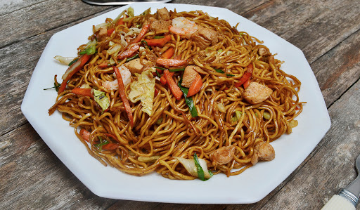

Chow-Mein

Description
Nepali Chow Mein is an mix of nepali and tibietan fusion that creates a savory and filling dish
while being very easy and quick to make.
Ingridents
- Rice Noodle or Spaghetti
- 2 tbsp. of vegitable oil
- Salt to taste
- Chow Mein masala
- Carrots
- Chopped Onions
- Chopped Cabbage
- Chilli
- Chicken
Steps
- Boil the noodle of your choice following the direction on the package, add some oil to the water to make
the noodle not stick to the pot.
- Once the noodle is boiled, pour it in a strainer to drain the water and make sure to wash the noodle gently
with cold water so it maintains firm structure.
- Heat up a pan, once its heated add 2 tbsp. of vegitable oil.
- Once the oil is heated, add the chopped oil and stir it constantly until its golden brown.
- Add the chicken in the pan and stir it till its golden brown.
- Add the cabbage, chilli, and cabbage next along with some salt and chow mein masala.
- Continue to stir the contents of the pan for 5 more minutes, making sure nothing is burnt.
- Add the noodles next and stir well.
- Thats all, enjoy your chow mein!